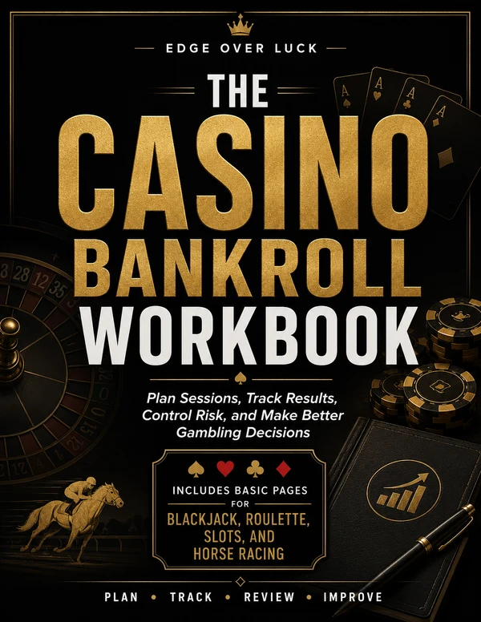

Blackjack Bankroll Calculator
Estimate blackjack bankroll pressure, expected loss, and session risk based on bet size and hands played.
Open Blackjack CalculatorSession risk before session regret
Bankroll tools help estimate session pressure before betting. They show how bankroll, bet size, game odds, variance, and session length can work together before real money is on the line.
Bankroll management does not remove the house edge, predict exact outcomes, or guarantee profit. Different games pressure bankroll differently because odds, variance, bet size, and session length are not the same across blackjack, roulette, slots, and horse racing.
Bet size decides how many units your bankroll actually contains. Small bets buy more decisions.
Longer sessions give the house edge more chances to show up in the results.
High-variance games can swing a bankroll fast even when the long-run math looks fine.
Raising bets after losses turns a planned session into an unplanned one.
Get a fast read on bankroll units before opening a full calculator. This is a simple sizing check, not a simulation.
This is a rough unit check, not a model of expected loss, variance, or house edge. Open the matching calculator below for a fuller picture.
Start with the game you actually plan to play. A blackjack hand, roulette spin, slot pull, and horse racing ticket do not create the same risk shape.
Estimate blackjack bankroll pressure, expected loss, and session risk based on bet size and hands played.
Open Blackjack CalculatorEstimate roulette session pressure by wheel type, bet size, bet type, and number of spins.
Open Roulette CalculatorEstimate how slot RTP, volatility, bet size, and session length can pressure a bankroll.
Check Slot SurvivalLearn unit sizing, ticket exposure, and session discipline for horse racing.
Read Horse Racing GuidanceCalculate exacta, trifecta, and superfecta box ticket cost before combinations get expensive.
Calculate Ticket CostTrack sessions, bet size, and stop points on a printable workbook page.
Open Bankroll PlannerFor players who want a physical version of the planning habit, the Casino Bankroll Workbook from Edge Over Luck includes pages for planning sessions, tracking results, and logging bankroll decisions across blackjack, roulette, slots, and horse racing.
As an Amazon Associate, Edge Over Luck earns from qualifying purchases. This is an affiliate link, and Edge Over Luck may earn a commission at no extra cost to you. It does not change the price you pay.

Bankroll tools can estimate risk, expected loss, ticket cost, total exposure, bankroll units, and session pressure. That is useful because bad sizing can make normal variance feel like the floor fell out.
They cannot predict exact outcomes, make negative expected-value bets profitable, or protect someone who keeps increasing bet size after losses. Betting systems do not remove the house edge; they only change the path your bankroll takes through the same math.
The same bankroll can feel comfortable in one game and thin in another. Compare the risk drivers before choosing the session size.
| Game type | Typical house edge range | Bankroll pressure factors |
|---|---|---|
| Blackjack | ~0.5% with correct basic strategy | Lower house edge is possible with correct basic strategy. Mistakes increase cost, and many decisions per session can compound small errors. See the blackjack strategy guide. |
| Roulette | 2.70% European / 5.26% American | Roulette has a fixed house edge, wheel type matters, and betting systems do not change expected loss. Compare odds with the roulette calculator or test sessions in the roulette simulator. |
| Slots | Varies widely by machine RTP | RTP and volatility matter. Bonus rounds create uneven results, and high volatility can drain a bankroll quickly even when the long-run RTP looks reasonable. See the slot volatility guide. |
| Horse Racing | Set by track takeout, not a fixed edge | Pari-mutuel pools and takeout matter. Ticket structure can multiply cost, and exotic bets usually have high variance. See the how we calculate odds notes. |
Quick definitions for the terms bankroll calculators use most often.
The total money set aside for gambling, kept separate from bills, savings, and living expenses.
Bankroll divided by average bet size. More units generally means more decisions before the bankroll is at risk of running out.
The average amount a bet is expected to lose over time, based on house edge, bet size, and number of decisions.
How much actual results can swing above or below the expected average, even when the long-run math is unchanged.
The estimated chance a bankroll hits zero before the planned session ends, given bet size, edge, and variance.
How many hands, spins, races, or pulls are planned. Longer sessions give the house edge more room to show up.
Most bankroll damage comes from a handful of repeatable habits, not bad luck alone.
A bet that feels small can still be too large relative to the total bankroll. Check the unit count before playing, not after a losing streak.
Increasing stakes after a downswing does not change the house edge. It usually compresses the session and increases the chance of ruin.
Without a planned number of hands, spins, or races, it is hard to judge whether the bankroll is actually built for the session.
A bankroll should be money already set aside for entertainment, never rent, savings, or money needed for real obligations.
Use this quick process before betting so the tool matches the real session you are considering.
Bankroll planning works best when you also understand the underlying odds and assumptions.
See the formulas and assumptions behind Edge Over Luck calculators and odds tools.
Review the math notesCompare wheel type, bet payout, probability, and expected value before sizing a roulette session.
Use the roulette calculatorLearn correct basic strategy so decisions, not house edge mistakes, drive your session results.
Read the strategy guideUnderstand how RTP and volatility combine to shape slot bankroll swings.
Read the volatility guideFind the bankroll behavior pattern most likely to drain your sessions.
Take the quizSet limits before playing and get help resources if gambling stops feeling controlled.
Read responsible gambling resourcesFind out whether your biggest bankroll leak comes from chasing, overplaying, overconfidence, or poor session planning.
A gambling bankroll is the money set aside for gambling sessions. It should be separate from bills, savings, and money needed for real life.
There is no safe universal number. The needed bankroll depends on the game, bet size, odds, volatility, and session length. Smaller bets and shorter sessions reduce pressure.
No. Bankroll management can help control exposure and session pressure, but it does not turn negative expected-value bets into profitable bets or remove the house edge.
Bet size determines how many units your bankroll contains. A large average bet gives normal losing streaks much more power to end the session quickly.
It depends on rules and bet choices, but high-volatility slots, roulette progressions, and horse racing exotic tickets can pressure a bankroll quickly because swings or ticket costs can grow fast.
No. Use a calculator or guide that matches the game because blackjack hands, roulette spins, slot pulls, and horse racing tickets all create different risk patterns.
A unit is your bankroll divided by your average bet size. More units generally means more decisions before the bankroll is at risk of running out, though it does not remove variance.
Lower the average bet size relative to the bankroll. It is usually a bigger lever than shortening the session, and it does not require changing which game you play.